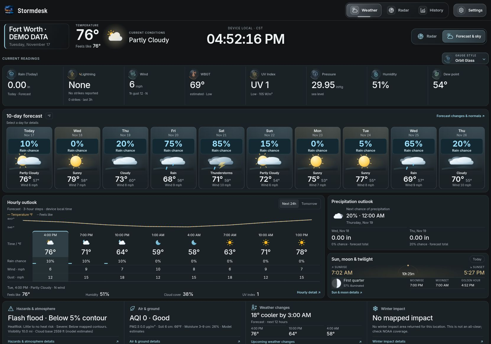
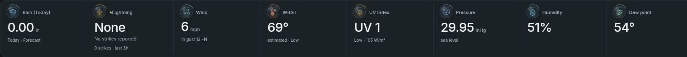
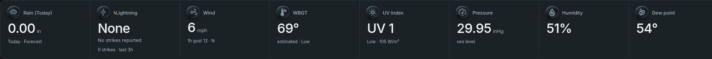
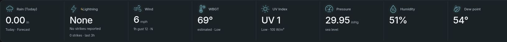
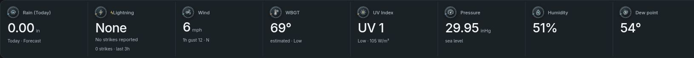
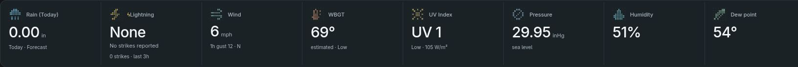
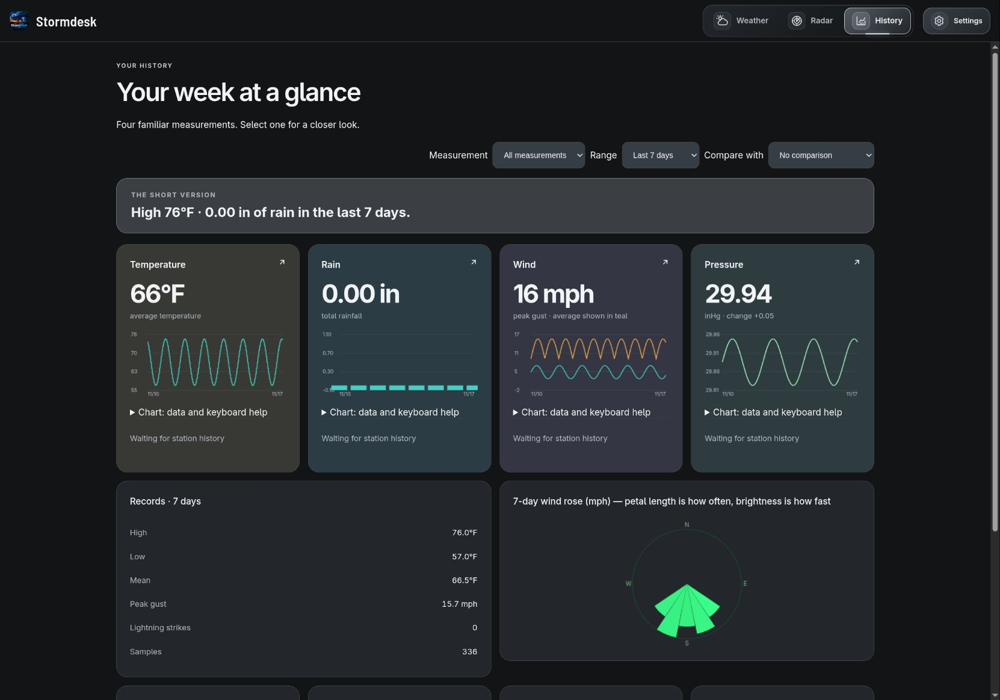
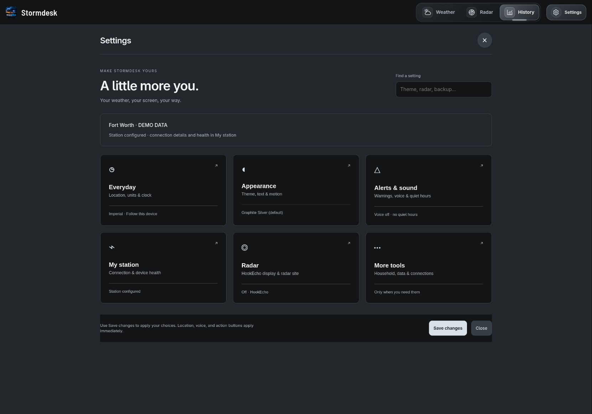

The real HookEcho viewer
Pan, zoom, choose radar products, and use playback inside the official embedded viewer. Open Radar for a dedicated map with StormDesk’s local warning banner below it.
INSIDE STORMDESK 4.12.0
Weather, Radar, and History. Three destinations for a quick check outside or a closer look at your station’s archive.

Actual temperature leads, with feels-like underneath and clearer place and current-condition labels. Eight live gauges sit above the ten-day forecast, with hourly weather and astronomy close by. The desktop layout adapts to smaller screens, while deeper information opens in dialogs. Missing readings stay labeled, forecast estimates remain distinct from observations, and WBGT remains an estimate.
Pan, zoom, choose radar products, and use playback inside the official embedded viewer. Open Radar for a dedicated map with StormDesk’s local warning banner below it.
Up to ten forecast cards pair readable rain chances and temperatures with condition-aware day and night scenes for sun, clouds, rain, snow, sleet and storms. Unknown conditions remain unavailable. Select a day for details, or explore hourly weather below it. Precipitation, visibility, atmosphere and official hazard outlooks retain source times and coverage labels.
Weather Changes compares forecast temperature, gusts and cloud cover over the next 12 hours, with a timeline and full hourly table. Partial coverage and saved forecasts remain labeled; these comparisons are forecasts, not station observations. Astronomy details show sunrise, sunset, moon times and twilight. Reduced-motion preferences remain respected.
Open Customize desk beside Gauge style. Choose Observatory, Mission Control, Skyline Glass, Weather Journal or Night Watch. Move navigation to any edge, reorder tabs, header items and gauges, arrange weather panels across four areas, and choose icon placement. Preferences stay local to each screen; restore the default layout whenever you need it. Full HookEcho radar and station history remain available.
Orbit Glass is the default. Use Gauge style to choose independently, or match gauges to a look in Customize desk; your choice stays on that screen. These static previews show all eight gauges. The app animates them and respects reduced motion. Open a preview for the full-size image, or swipe across it on a phone.





Choose from all twenty theme options in Customize desk or Settings → Appearance, including Graphite Silver, light, high-contrast and e-ink choices. Existing preferences are preserved.

Start with temperature, rain, wind, and pressure snapshots. Explore detailed charts and tables, compare periods, and inspect records. On your installed station host, Archive review adds CSV import previews, notes, reversible exclusions, supported cloud recovery, and monthly or annual printable reports. Additional sensors show supported indoor, soil, air-quality, and battery channels.
Large History charts reuse their prepared data, hidden radar unloads, and the host avoids repeated upstream requests. Station and location changes keep forecasts and Lite history separate. Slow uploads no longer occupy normal weather-request workers, and incomplete uploads are rejected. Version 4.11.0 also tightens credential handling, private settings access and offline-cache boundaries.
| Hosted browser app | Your installed host |
|---|---|
| Start with a location and use forecast, radar, and supported cloud station data. | Collect supported station readings and keep the archive on your own computer. |
| Preferences stay in this browser at this address. | Serve household screens over your local network. New hosts give unpaired screens viewer access; pair trusted screens that need to edit. |
| No StormDesk account required. Weather services require internet access. | Desktop, Linux browser-mode, and Docker options. A host must stay running for collection and household access. |
Native downloads are available for Windows, macOS, Linux, Raspberry Pi, and Android. Station connection methods vary by device and source; see compatibility before choosing a setup.

Everyday, Appearance, Alerts & sound, My station, Radar, and More tools organize the controls. Search for a setting, open its category, and save your changes. Start with the setup guide for station connections and troubleshooting.
Forecast and warning coverage varies by provider and region. Keep an official emergency source available.
Charcoal and amber.